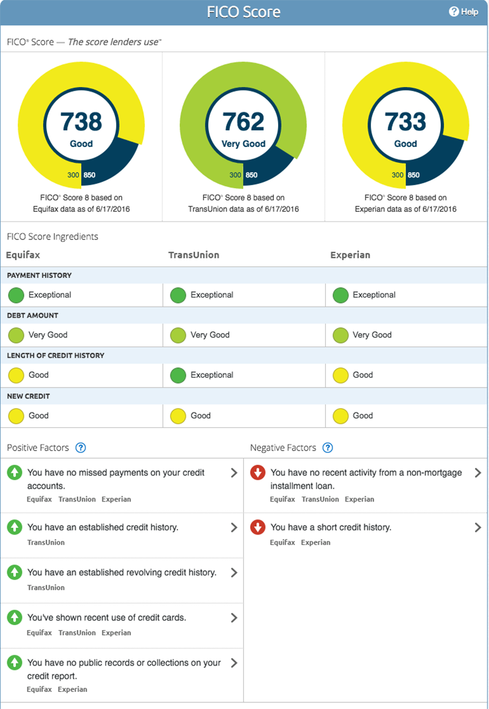

Get a Free Credit Report | Equifax®
- Get Your Free Credit Reports | Credit Karma
Accessing your credit report is an important part of managing your credit health through the COVID-19 outbreak. TransUnion is pleased to offer you free weekly credit reports online through April 2021 as part of our commitment to supporting all Americans during this difficult time.Get your free report now at annualcreditreport.com. - Check Your FREE Credit Score & Report. Totally Free ...
Full credit report. We make it easy to understand all the info in your credit file, so you know where you stand. Six years’ analysis. ... Based on a survey of 958 TotallyMoney credit report customers . Stay one step ahead. Live credit score. We show your most recent credit score happenings, so you can track changes in real time. - What's On My Full Credit Report? | Credit.com
Check your TransUnion credit report with Credit Karma. Full credit report services? Remember. Be aware that repeatedly applying for credit can harm your chances of getting credit, because lots of credit searches might indicate you’re having problems. You can apply for your credit record as often as you like though. - freecreditreport.com: No Credit Card Needed.
Free Credit Score: Check your Credit Report Online. Lenders (like credit card issuers) use credit score scores to assist predict danger, and their opinions are those that matter most in the end. Like every credit card utility, different elements can have an effect on your approval resolution. - Free Credit Score: Check your Credit Report Online
A credit report can help when buying a house or car. Learn more about when, why and how you should get a free credit report. Personal. Products & Services. Equifax Premium Products. Get peace of mind when you choose from our comprehensive 3-bureau credit monitoring and identity theft protection plans. - How to check your credit report - Money Advice Service
Credit Report 101 From the latest information on Credit Reports, Identity Theft, to videos and credit calculators, our blog is an excellent resource for helping you navigate "all things credit." Infographic: Reading a Credit Report - Free Credit Report - Experian
What Is The Highest Credit Score Possible. The pattern credit report additionally incorporates definitions of some difficult terminology found in the report. Experian, Transunion and Equifax every has its own websites, where it would give you a free credit report for 30 days. That is the only web site to get your free credit report. - Get a Free Credit Report | Equifax®
Once your Multi-Agency Credit Report has been generated, click the ‘Download Printable Report’ link, found at the bottom of your Credit Report. If this option doesn’t show for any reason please get in touch via email, secure message through your account, or call us free on 0800 086 9360 and we will assist you further. - Annual Credit Report.com - Home Page
How to get your Annual Credit Report from Experian. Under federal law you are entitled to a copy of your credit report annually from all three credit reporting agencies - Experian, Equifax ® and TransUnion ® - once every 12 months. To get your Experian annual credit report online, and by phone or mail, visit www.AnnualCreditReport.com. - Free Credit Reports | FTC Consumer Information
It can be helpful to think of a credit score as a letter grade you get in school, while a credit report is like a listing of all the homework, tests and quizzes that go into earning that grade. Credit Karma offers free credit reports and free credit scores from Equifax and TransUnion, two of the three major consumer credit bureaus. Speaking of ...

Personal Products & Services
Equifax Premium Products
Get peace of mind when you choose from our comprehensive 3-bureau credit monitoring and identity theft protection plans.
Equifax Complete™ Family Plan Equifax Complete™ Premier Score Watch ® Compare Premium productsEquifax Complete™ Family Plan
Help look after your family with credit monitoring and ID theft protection features.
Uncover potential fraud with 3-bureau credit monitoring and alerts Feel more confident knowing that the dark web is being monitored for your Social Security Number Help better protect up to 4 children by locking their Equifax credit report Learn MoreEquifax Complete™ Premier
Take control with a one-stop credit monitoring and identity theft protection solution from Equifax.
Know where you stand with access to your 3-bureau credit scores and report Help monitor your credit and Social Security number Uncover potential fraud with credit monitoring and alerts Learn MoreScoreWatch ®
Know where you stand with Equifax credit report monitoring and access to your FICO® score.
Access your FICO® score and Equifax credit report twice a year Help better protect your identity with credit monitoring and alerts See how your FICO® score trends over time Learn MoreEquifax Value Products
Get the basics you need to stay on top of your credit; including 1-bureau credit score access, Equifax credit report lock, and alerts.
Equifax Complete™ Equifax Credit Monitor™ Equifax Core Credit™ Compare Value productsEquifax Complete™
Don’t let identity theft catch you off guard. Get better prepared to monitor your credit and help better protect your identity with Equifax Complete™.
Receive alerts of key changes to your Equifax credit report Should you become a victim of identity theft, our dedicated ID Restoration Specialists will work on your behalf to help you recover Learn MoreEquifax Credit Monitor™
Easily lock and monitor your Equifax credit report with alerts.
Know when key changes occur to your credit score and Equifax credit report with alerts Easily lock your Equifax credit report and be alerted if an attempt to access it is blocked Learn MoreEquifax Core Credit™
Get the basics with your monthly credit score and report.
Keep track of your financial progress with monthly VantageScore credit scores Feel credit confident with monthly access to your Equifax credit report Learn More Learn & SupportLearn more about...
Credit reports Understand how your financial behavior impacts you and your credit. Identity theft Learn what you can do to help better protect your information, and what you should be looking for when it comes to identity theft. Credit scores Understand credit scores, creditworthiness, and how credit scores are used in day-to-day life. COVID + Credit Find resources to help you navigate financially in a global pandemic. View all education articlesNeed help?
FAQ Security Freeze Credit report disputes Credit report s & credit scores Equifax products Military personnel & families Fraud alerts Customer Care Need help? We are available by phone or email.Tell us why you're here
Understand my Equifax credit report and score Help protect myself from identity theft Prepare to make a large purchase Get a free copy of my Equifax credit report Place or manage a freeze on my Equifax credit report Dispute information on my Equifax credit report Place or manage a fraud or active duty alert Credit Report AssistanceCredit Report Assistance
Get your free weekly credit report Access a free weekly credit report through www.annualcreditreport.com. Get my free Equifax credit report With a myEquifax account, you'll receive multiple Equifax credit reports each year. No credit card required! Place a security freeze Place or manage a freeze to restrict access to your Equifax credit report, with certain exceptions. Dispute information on your Equifax credit report Submit a dispute if you notice something is inaccurate or incomplete on your credit report. Request a fraud or active duty alert Place an alert on your credit reports to warn lenders that you may be a victim of fraud or on active military duty. Sign up for active duty credit monitoring Get free credit monitoring if you are an active duty military or National Guard member. Other ways to get additional free credit reports You may be entitled to additional free credit reports in certain circumstances, such as after placing a fraud alert, becoming unemployed or receiving public assistance, or being denied credit or insurance in the past 60 days. Visit consumer services center Create your myEquifax TM account Quickly access your Equifax credit report, place a freeze or fraud alert, or submit a dispute. SIGN UP LOG IN
Business Products & Solutions Industries & Business Needs Industries Automotive Business Services Communications, Utilities & Digital Media Education Financial Services Healthcare Insurance Mortgage Restaurants Retail & Wholesale Trade Staffing Transportation & Distribution Business Needs Acquire More Customers Credit Data Reports Credit Monitoring & Identity Protection Grow Existing Business Leverage Analytics Manage Regulatory Compliance Manage My Workforce Mitigate Risk Prevent Fraud Recover Debt Run My Small Business Verify Information Learn Thought Leadership Evolving Customer Expectations Credit Decisioning Discover Your Maximum Viable Person Recession Planning & Preparedness Understanding Current Expected Credit Loss (CECL) Resources Downloadable Assets Insights Blog Login
Contact Us
Government Products & Solutions Government Areas & Needs Government Area Healthcare Social Services Tax and Revenue Government Need Leverage Analytics Manage Regulatory Compliance Prevent Fraud Verify Information Resources Login
Contact Us
About Us Careers Company Profile Corporate Leadership Community Engagement Security and Technology Transformation Environmental, Social and Governance Priorities Corporate Governance Investor Relations Newsroom Support Argentina Australia Canada Chile Costa Rica Ecuador El Salvador Honduras India Mexico New Zealand Paraguay Peru Portugal Russia Spain United Kingdom United States Uruguay Free Credit Reports
You may already know that there are multiple ways you can get a free credit report. You can get free Equifax credit reports at annualcreditreport.com. 1 You can also receive free Equifax credit reports with a myEquifax account. Just look for "Equifax Credit Report" on your myEquifax dashboard.
Get Started Why should I check my credit report? The more you know about your credit history before making a big decision, like buying a house or a car, the more prepared you will be to take on the financial obligations that may happen as a result. Checking your credit reports does not impact your credit scores, but it may help establish the right kinds of behaviors early on, and may help spot signs of identity theft. How can I get a free credit report? Here are some of the ways to get a free copy of your Equifax credit report. myEquifaxAs part of myEquifax, you'll receive free Equifax credit reports each year. It's free!
Get started Annualcreditreport.comAccess free credit reports from each of the nationwide credit bureaus each week.
Get started Equifax.com/FCRAYou may be entitled to additional free credit reports under certain circumstances .
Get startedWhat you need to know
What information is in a credit report?
Ever wondered what information goes into your credit report, and what to look for as you’re reviewing it? A credit report is a summary of your unique financial history. The three nationwide credit bureaus collect and maintain a history of your credit activity as reported by the lenders and creditors you have accounts with. Your credit report includes important information about you, including:
Personal information, such as your name, Social Security number, aliases or former names, current and former addresses, and sometimes your current and former employers; Account information, including payment history, account balances and limits, and dates the accounts were opened or closed. This includes credit accounts that may be in your name such as credit cards, mortgages, student loans, and vehicle loans; Bankruptcies and accounts in collections; and Inquiries, which lists the lenders and other companies that have accessed your credit report.
As you look at your credit report, keep the following in mind:
Why is knowing about my credit important?
Your credit reports tell a detailed story about you, including information about your financial accounts, and your payment history. Those who can access this information, including third parties with “ permissible purpose ”, may accept or deny your applications for credit based in part on the information in your credit reports, as well as their own lending criteria.
The more you know about your financial accounts and credit history before making a big decision like buying a house or a car, the more prepared you will be to take on the financial obligations that may happen as a result.
Am I eligible for an additional credit report?
Another way you can receive a copy of your free credit report from the three major credit bureaus is by meeting one of the following requirements as outlined in the Fair Credit Reporting Act .
If you meet one of these requirements, you are entitled to one additional free copy of your credit report during any 12-month period:
You are also entitled to a free copy of your credit report if you meet these requirements:
If you live in certain states , you may be eligible for additional free credit reports.
More about credit reports Understanding hard inquiries on your credit reportShopping for a loan involves many steps and, potentially, multiple credit checks. Understand how hard inquiries are generated on your credit report.
Read More Credit myths and facts you should knowHow much do you know about credit? Take this true/false quiz to test your credit IQ.
Read More How long does information stay on my Equifax credit report?Find out what information stays on a credit report and for how long.
Read More Looking for something else? Access other helpful Equifax services. VISIT CONSUMER SERVICES CENTER Place or manage a freeze Add or manage a fraud or active duty alert Submit a disputeIn connection with various settlements, Equifax is making at least six additional free Equifax credit reports each year available online to U.S. consumers on annualcreditreport.com until December 31, 2026. These reports are included in the free weekly Equifax credit reports currently offered on annualcreditreport.com through April 2021.
Who We Are
About Equifax Careers Newsroom Investor RelationsCredit Report Assistance
Get my free annual credit report Dispute info on credit report Request a fraud alert Place a security freeze on reportsCredit Education
Credit Score Credit Report Identity Theft ProtectionConnect with us
Contact a Customer Care Representative Privacy Policy Terms of Use Ad Choices Report a Vulnerability Accessibility Sitemap Connect with Us Copyright 2020 Equifax, Inc. All rights reserved Equifax and the Equifax marks used herein are trademarks of Equifax Inc. Other product and company names mentioned herein are the property of their respective owners. x


Mauris vulputate dolor
Rutrum fermentum nibh in augue praesent urna congue rutrum.
Etiam posuere